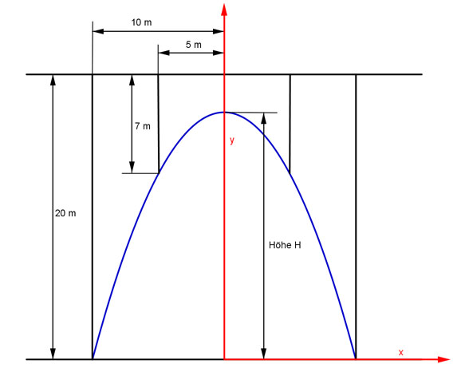

Aufgabe 131 Wie hoch ist der parabelförmige Brückenbogen?  Der Scheitelpunkt der Parabel liegt auf der y-Achse, deswegen hat sie die allgemeine Form: y = ax² + c 2 Punkkoordinaten abgelesen: P1(-5|-7); P2(-10|-20) Eingesetzt: -7 = a(-5)² + c -20 = a(-10)² + c -7 = 25a + c (1) -20 = 100a + c (2) (2) * (-1) + (1): 20 = -100a - c -7 = 25a + c ------------------- 13 = -75a |:(-75) 13 a = - ---- 75 Eingesetzt in (1): 13 -7 = 25 * - ---- + c 75 13 13 -7 = - ---- + c |+ ---- 3 3 21 13 8 c = - ---- + ---- = - --- 3 3 3 8 60 8 52 Höhe H = 20 - --- = ---- - --- = ---- = 17,3 m 3 3 3 3